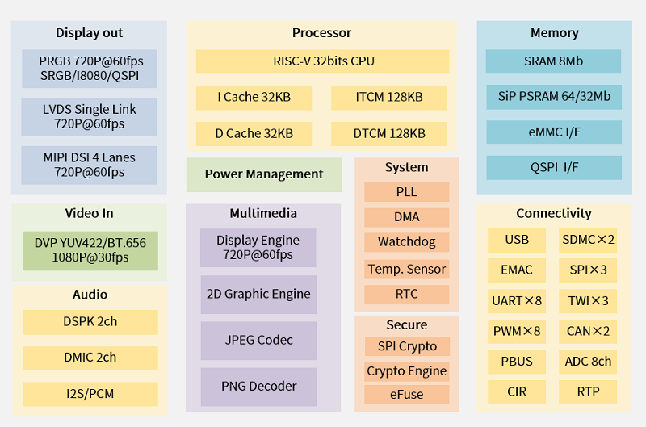

产品简介¶
D13X¶
D13X 系列是一款高性能的工业级高清显示和智能控制 MCU，采用国产自主高算力 RISC-V 内核，配备强大的 2D 图形加速处理器， 内置自研 PNG/JPEG 解码引擎，支持丰富的软件生态，适用于各类交互设计和多媒体互动场景，具有功能强大、可靠稳定的特点。 适用于各种工业领域的高清显示和智能控制需求。
集成 32位 RISC-V 处理器，典型频率 480MHz
1MB SRAM + 4/8MB PSRAM
集成应用领域体验优化的 Display Engine，Graphic Engine
丰富的屏接口：RGB，LVDS，MIPI DSI，I8080，QSPI
丰富的外设接口，满足大部分工业使用场景
QFN68、QFN88、QFN100 3种封装可选

Luban-Lite¶
Luban-Lite 是 ArtInChip 为工业应用场景专门设计的 RTOS SDK，可支持 RT-Thread（默认）、FreeRTOS 多内核的切换， 也支持一键切换 baremetal 构建模式，并完全兼容 RT-Thread 软件生态。 支持跨平台的命令行开发方式，同时为Windows用户提供了更友好的Eclipse IDE。
支持 Windows， Linux 环境开发
支持 EClipse，VSCode 等主流 IDE 工具
超多订制命令，大量工作 OneStep 化
RT-Thread LTS-V4.1.1
LVGL 8.3 适配 G2D
应用场景¶
HMI
串口屏
屏显医疗设备
智能终端
扫码器
生物识别终端